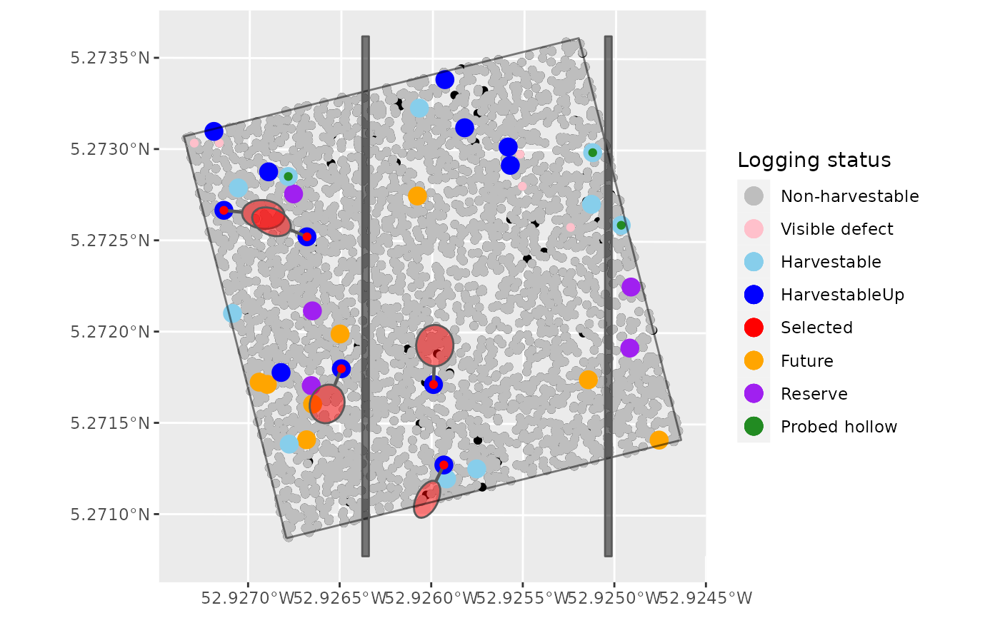
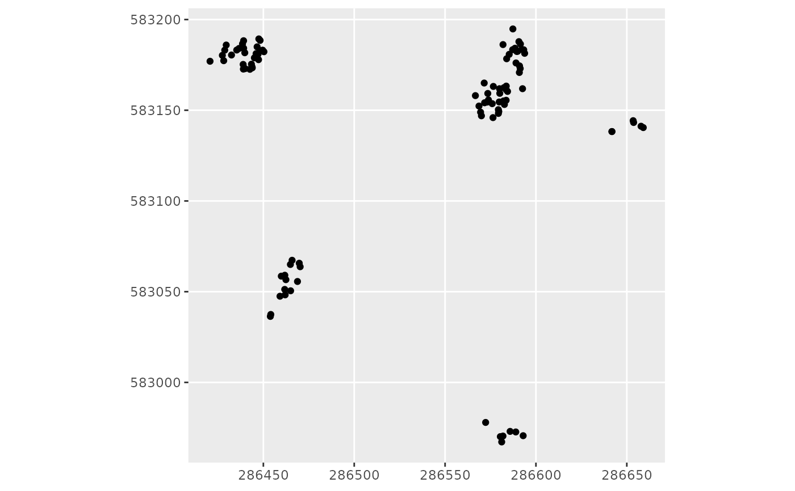

Tree felling
Usage
treefelling(
inventory,
scenario,
fuel = NULL,
winching = NULL,
directionalfelling = NULL,
MainTrails,
ScndTrail,
advancedloggingparameters = loggingparameters()
)Arguments
- inventory
Input inventory (see the inputs formats and metadata in the
vignette) (data.frame)- scenario
Logging scenario: "RIL1", "RIL2broken", "RIL2", "RIL3", "RIL3fuel", "RIL3fuelhollow" or "manual"(character) (see the
vignette)- fuel
Fuel wood exploitation: no exploitation = "0", exploitation of damage and unused part of logged trees for fuel = "1", exploitation of hollow trees, damage and and unused part of the log for fuel = "2"
- winching
No cable or grapple = "0", only cable = "1", grapple + cable = "2"
- directionalfelling
Directional felling = "0": only to direct the foot of the tree towards the trail "1": to direct the foot of the tree towards the trail + to avoid damage to future and reserve trees if possible "2": to avoid damage to future and reserve trees if possible + orientation angle to the trail
- MainTrails
Main trail (sfg)
- ScndTrail
Secondary trails (sfg)
- advancedloggingparameters
Other parameters of the logging simulator
loggingparameters(list)
Value
Input inventory with new columns:
The tree felling success or fail("TreeFellingOrientationSuccess")
The crowns of all the trees in the inventory (Polygon)
The fallen trees ("TreePolygon"): a MULTIPOLYGON of the tree oriented according to the chosen scenario
The dead trees under felled trees (DeathCause = "treefall2nd")
Details
The felling of the tree creates a tree (including crown) on the ground, with dimensions calculated with specific allometries ('advancedloggingparameters').
RIL1/RIL2broken/RIL2:
at 40%: random fall
at 60% ('TreefallSuccessProportion'): base of the tree towards the nearest trail (main or 2ndary)
RIL3/RIL3 timber + fuel wood:
at 40%: random fall
at 60% ('TreefallSuccessProportion'):
if trees < 6 m from the trail and slope <20% (grapple use):
no particular angle to orientate to the trail, only to orient the tree base(crown if fuel wood exploitation) as close as possible to the trail
priority 1: avoid futures and reserves,
priority 2: conformation allowing skidding back to the main trail
otherwise (trees > 6 m from the trail and/or slope >20%)(cable use):
30-45◦ (default) orientation ('MinTreefallOrientation'; 'MaxTreefallOrientation')
base to nearest trail
conformation allowing skidding back to the main trail
avoid futures and reserves if possible
Damage: Secondary windfall: all trees under the felled tree (timber or energy) will be considered dead.
Examples
data(Paracou6_2016)
data(DTMParacou)
data(PlotSlope)
data(SpeciesCriteria)
data(HarvestablePolygons)
data(MainTrails)
pol1 <- list(matrix(c(286503, 582925,
286503, 583240,
286507, 583240,
286507, 582925,
286503, 582925) # the return
,ncol=2, byrow=TRUE))
pol2 <- list(matrix(c(286650, 582925,
286650, 583240,
286654, 583240,
286654, 582925,
286650, 582925) # the return
,ncol=2, byrow=TRUE))
PolList = list(pol1,pol2) #list of lists of numeric matrices
ScndTrail <- sf::st_as_sf(sf::st_sfc(sf::st_multipolygon(PolList)))
ScndTrail <- sf::st_set_crs(ScndTrail, sf::st_crs(MainTrails))
inventory <- addtreedim(cleaninventory(Paracou6_2016, PlotMask),
volumeparameters = ForestZoneVolumeParametersTable)
inventory <- suppressMessages(treeselection(inventory, objective = 4,
scenario ="manual", fuel = "0", diversification = TRUE, specieslax = FALSE,
objectivelax = TRUE, topography = DTMParacou, plotslope = PlotSlope,
speciescriteria = SpeciesCriteria, MainTrails = MainTrails,
harvestablepolygons = HarvestablePolygons,
advancedloggingparameters = loggingparameters())$inventory)
NewInventory <- treefelling(inventory, scenario = "manual", fuel = "0",
winching = "0", directionalfelling = "0",
MainTrails = MainTrails, ScndTrail = ScndTrail,
advancedloggingparameters = loggingparameters())
NewInventory_crs <- NewInventory %>%
getgeometry(TreePolygon) %>%
sf::st_set_crs(sf::st_crs(MainTrails)) # set a crs
Inventory_crs <- sf::st_as_sf(inventory, coords = c("Xutm", "Yutm")) # as sf
Inventory_crs <- sf::st_set_crs(Inventory_crs, sf::st_crs(MainTrails)) # set a crs
Treefall <- sf::st_as_sf(
dplyr::filter(NewInventory, DeathCause == "treefall2nd"),
coords = c("Xutm", "Yutm")) %>%
sf::st_set_crs(sf::st_crs(MainTrails)) # set a crs
NonHarvestable <- sf::st_as_sf(
dplyr::filter(Inventory_crs, LoggingStatus == "non-harvestable"),
coords = c("Xutm", "Yutm"))
Harvestable <- sf::st_as_sf(
dplyr::filter(Inventory_crs, LoggingStatus == "harvestable"),
coords = c("Xutm", "Yutm"))
HarvestableUp <- sf::st_as_sf(
dplyr::filter(Inventory_crs, LoggingStatus == "harvestableUp"),
coords = c("Xutm", "Yutm"))
Selected <- sf::st_as_sf(
dplyr::filter(Inventory_crs, Selected == "1"), coords = c("Xutm", "Yutm"))
Reserve <- sf::st_as_sf(
dplyr::filter(Inventory_crs, LoggingStatus == "reserve"),
coords = c("Xutm", "Yutm"))
Future <- sf::st_as_sf(
dplyr::filter(Inventory_crs, LoggingStatus == "future"),
coords = c("Xutm", "Yutm"))
ProbedHollow <- sf::st_as_sf(
dplyr::filter(Inventory_crs, ProbedHollow == "1"), coords = c("Xutm", "Yutm"))
VisibleDefect <- sf::st_as_sf(
dplyr::filter(Inventory_crs, VisibleDefect == "1"), coords = c("Xutm", "Yutm"))
library(ggplot2)
ggplot() +
geom_sf(data = Inventory_crs) +
geom_sf(data = NonHarvestable,
aes(colour = "Non-harvestable"), show.legend = "point") +
geom_sf(data = VisibleDefect,
aes(colour = "Visible defect"), show.legend = "point") +
geom_sf(data = Future,
aes(colour = "Future"), show.legend = "point", size = 4) +
geom_sf(data = Reserve,
aes(colour = "Reserve"), show.legend = "point", size = 4) +
geom_sf(data = Harvestable,
aes(colour = "Harvestable"), show.legend = "point", size = 4) +
geom_sf(data = HarvestableUp,
aes(colour = "HarvestableUp"), show.legend = "point", size = 4) +
geom_sf(data = NewInventory_crs, # cuted trees
alpha = 0.5, fill = "red") +
geom_sf(data = Selected, aes(colour = "Selected"), show.legend = "point") +
geom_sf(data = ProbedHollow,
aes(colour = "Probed hollow"), show.legend = "point") +
geom_sf(data = MainTrails,
alpha = 0.5, fill = "black") +
geom_sf(data = ScndTrail,
alpha = 0.5, fill = "black") +
scale_colour_manual(values = c("Non-harvestable" = "grey",
"Visible defect" = "pink", "Harvestable" = "skyblue",
"HarvestableUp" = "blue", "Selected" = "red", "Future" = "orange",
"Reserve" = "purple", "Probed hollow" = "forestgreen")) +
labs(color = "Logging status")

suppressWarnings(sf::st_intersection( # trees under the fallen trees
getgeometry (NewInventory, TreePolygon),
sf::st_as_sf(NewInventory, coords = c("Xutm", "Yutm"))
)) %>%
ggplot() +
geom_sf()
